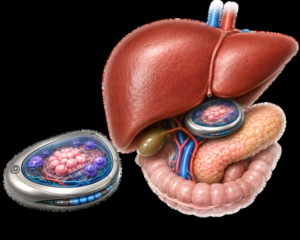
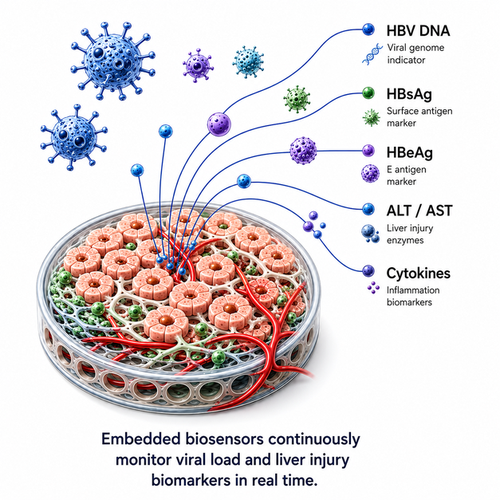
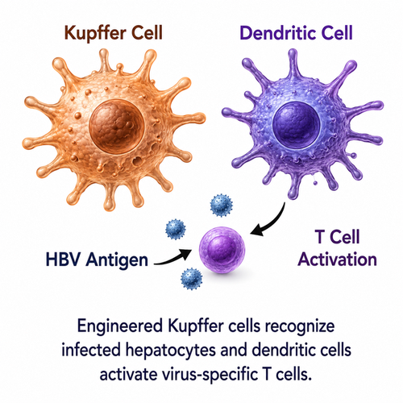
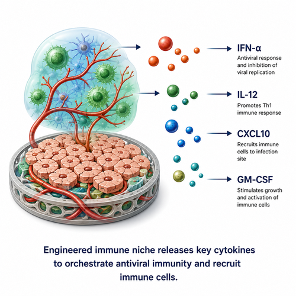
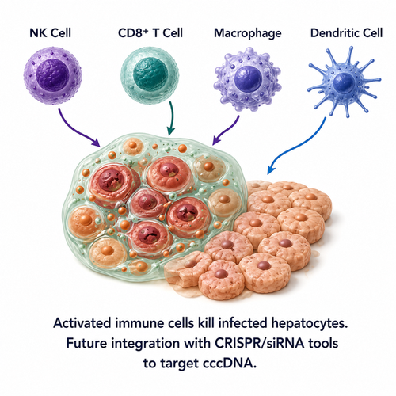
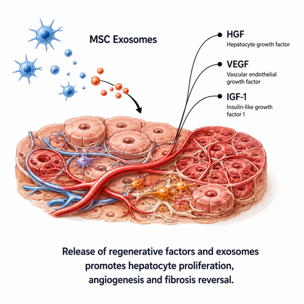
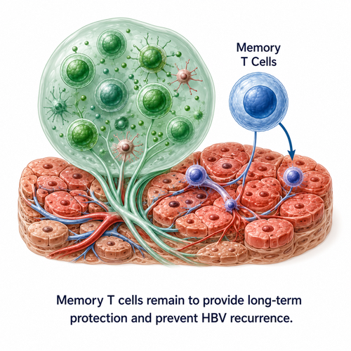
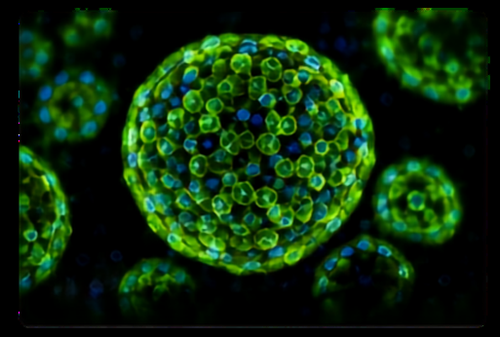
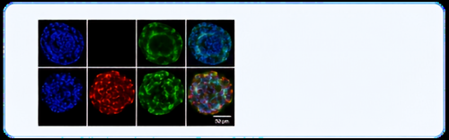

Project Abstract
Chronic Hepatitis B virus (HBV) infection remains a major global health challenge, affecting approximately 296 million people worldwide and standing as a leading cause of liver cirrhosis and hepatocellular carcinoma. Although current antiviral therapies effectively suppress viral replication, they fail to eradicate covalently closed circular DNA (cccDNA), resulting in persistent infection, immune exhaustion, lifelong treatment, and disease recurrence.
To address these limitations, we propose the BioArtificial Immune Liver (BAIL) — a conceptual smart implantable bioengineered platform that integrates regenerative medicine, immunotherapy, biosensing, and intelligent therapeutic control into a unified system. BAIL is designed as a three-layer architecture: a Living Hepatic Tissue Module for continuous HBV biomarker detection and liver support, an Immune Surveillance and Activation Module for targeted antiviral immunity, and a Smart Therapeutic Control Module for AI-guided, localized intervention.
BAIL Architecture — Three-Layer Smart System

Layer 1 · Living Hepatic Tissue
Human iPSC-derived hepatocytes cultured within a biocompatible 3D scaffold to recreate the native liver microenvironment, enabling real-time detection of infected hepatocytes and continuous metabolic support.
Layer 2 · Immune Surveillance
Engineered Kupffer cells, NK cells, cytotoxic T cells, and macrophages detect infected hepatocytes, present antigens, and destroy infected cells while releasing antiviral mediators.
Layer 3 · Smart Therapeutic Control
Integrated biosensors track viral load and inflammation. AI algorithms decide the optimal intervention, and microfluidic channels deliver immune modulators and cytokines locally.
Mechanistic Pathway — From Detection to Cure

HBV Detection
Continuous biomarker monitoring via embedded biosensors

Immune Recognition
Kupffer & dendritic cells activate adaptive immunity

Immune Activation
Niche cell orchestration and cytokine delivery

Virus Elimination
Targeted killing & future CRISPR-based cccDNA disruption

Liver Regeneration
Regenerative factors released to counter fibrosis

Immune Memory
Long-term autonomous memory T-cell surveillance
Key Clinical & Scientific Foundations
The conceptual BAIL model is anchored in recent clinical trials and preclinical breakthroughs in bioartificial liver support, immunology, and regenerative organ engineering.
HepAssis2® Bioartificial Liver System
A randomized, open-label phase 1 trial of the HepAssis2® bioartificial liver system in HBV-related acute-on-chronic liver failure (ACLF) patients in a high-endemic-HBV setting — establishing clinical demand for systems pairing detoxification with active metabolic support, echoing BAIL's Living Hepatic Tissue Module.
The UTOpiA Tandem Circuit (Takebe Group)
A dual-component whole-blood extracorporeal circuit combining upstream immune-cell apheresis with a downstream bioreactor of gene-edited liver organoids. In rodent ACLF/ALF models, ~88% of UTOpiA-treated animals survived versus ~12% of untreated controls, supporting BAIL's tandem immunomodulation-plus-hepatic-support strategy.
Genetically Engineered Porcine Liver (Extracorporeal Bridging)
The FDA cleared the first clinical trial of a genetically engineered porcine liver used with an extracorporeal cross-circulation system for ACLF patients — real regulatory precedent for complex, macroscale bioartificial liver-support architectures like BAIL.
Clinical-Grade hiHep-BAL Device
A bioartificial liver built with GMP-manufactured human-induced hepatocytes (~10¹⁰ cells) improved ammonia detoxification and liver regeneration in a human pilot study, and is now in a phase 2 ACLF trial (NCT05989958) — direct evidence that manufactured human hepatocytes can rescue liver function.

Hepatic Immune Surveillance & T-Cell Differentiation in HBV
HBV persistence results from impaired hepatic immune surveillance involving Kupffer cells, NK cells, and virus-specific CD8+ T cells. Restoring these pathways — including durable memory T-cell populations — forms the immunological basis of BAIL's Layer 2 Immune Surveillance Module.
Strategic Advantages vs. Legacy Models
| Parameter | Antiviral Drugs | Immunotherapy | Liver Transplant | BAIL Platform |
|---|---|---|---|---|
| cccDNA Elimination | ✗ No | ✗ Limited | ✓ Removed with liver | ✓ Future CRISPR |
| Immune Restoration | ✗ No | Partial | ✗ No | ✓ Engineered |
| Liver Regeneration | ✗ No | ✗ No | ✓ Complete | ✓ Continuous |
| Real-Time Monitoring | ✗ No | ✗ No | ✗ No | ✓ Integrated Biosensors |
| Targeted Therapy | Moderate | High | Whole Organ | ✓ Localized & Precise |
| Personalization | Low | Moderate | Low | ✓ Patient-Specific |
| Treatment Duration | Lifelong | Multiple Cycles | One-time Surgery | ✓ Long-term Autonomous |
| Disease Recurrence | Possible | Possible | Possible | ✓ Reduced Risk |
| Systemic Toxicity | Moderate | High | High | ✓ Localized Therapy |
Regulatory & Market Landscape
FDA RMAT Pathway
Regenerative Medicine Advanced Therapy designation supports accelerated development of regenerative, cell-based, and tissue-engineered therapies for serious diseases.
EMA ATMP Framework
Advanced Therapy Medicinal Products provide the EU regulatory pathway for gene therapies, tissue-engineered products, and somatic cell therapies.
WHO Hepatitis Elimination Strategy
WHO aims to eliminate viral hepatitis as a public health threat by 2030 — driving demand for curative platforms beyond lifelong antiviral therapy.

Applications
Chronic HBV Management
Long-term implantable platform for continuous monitoring, immune activation, and functional control in chronic HBV patients.
Personalized Therapeutic Testing
Patient-specific liver model for evaluating antiviral drugs, immunotherapies, and combinatorial treatments with real-time response data.
Liver Regeneration & Failure Support
Supports hepatic tissue regeneration, detoxification, and metabolic functions in acute liver failure and end-stage liver disease.
Future Directions & Conclusion
Gene Editing Integration
CRISPR/Cas systems for targeted removal of HBV cccDNA and prevention of viral relapse.
Smart Monitoring & AI
Advanced biosensors and AI algorithms for real-time monitoring and adaptive therapeutic control.
Enhanced Tissue Engineering
Optimizing vascularization, scaffold design, and cell crosstalk for long-term implant stability.
Clinical Translation
Scaling manufacturing and establishing regulatory pathways for clinical implementation.
BAIL combines regenerative medicine, immunotherapy, biosensors, and bioelectronics into a single platform, requiring multidisciplinary GMP manufacturing and long-term clinical validation. Supported by emerging advances in liver organoids, immune microenvironment engineering, and regenerative medicine, this conceptual platform offers a framework for next-generation precision therapeutics and a potential pathway toward autonomous, patient-specific management of chronic HBV infection.
References
- Sharma, S., Rawal, P., Kaur, S., & Puria, R. (2023). Liver organoids as a primary human model to study HBV-mediated hepatocellular carcinoma: A review. Experimental Cell Research, 428(1), 113618. doi.org/10.1016/j.yexcr.2023.113618
- Iannacone, M., & Guidotti, L.G. (2022). Immunobiology and pathogenesis of hepatitis B virus infection. Nature Reviews Immunology, 22(1), 19–32. doi.org/10.1038/s41577-021-00549-4
- Cao, D., Ge, J.-Y., Wang, Y., Oda, T., & Zheng, Y.-W. (2021). Hepatitis B virus infection modeling using multi-cellular organoids derived from human induced pluripotent stem cells. World Journal of Gastroenterology, 27(29), 4784–4801. doi.org/10.3748/wjg.v27.i29.4784
- Zhong, Z. et al. (2026). HepAssis2® bioartificial liver system in treating acute-on-chronic liver failure patients: findings from a phase 1 randomised, open-label clinical trial. Clinical and Translational Medicine, 16(2), e70620. doi.org/10.1002/ctm2.70620
- Yamaguchi, H. et al. (2025). Reversal of ACLF and ALF using whole blood extracorporeal system combining HLA-depleted liver organoids with granulocyte-monocyte apheresis (UTOpiA). Journal of Hepatology, 84(2), 293–307. doi.org/10.1016/j.jhep.2025.08.038
- Wang, Y. et al. (2023). Reversal of liver failure using a bioartificial liver device implanted with clinical-grade human-induced hepatocytes. Cell Stem Cell, 30(5).
- eGenesis & OrganOx (2025). FDA clears IND for genetically engineered porcine liver (EGEN-5784) with extracorporeal liver cross-circulation system. Reported April 2025.